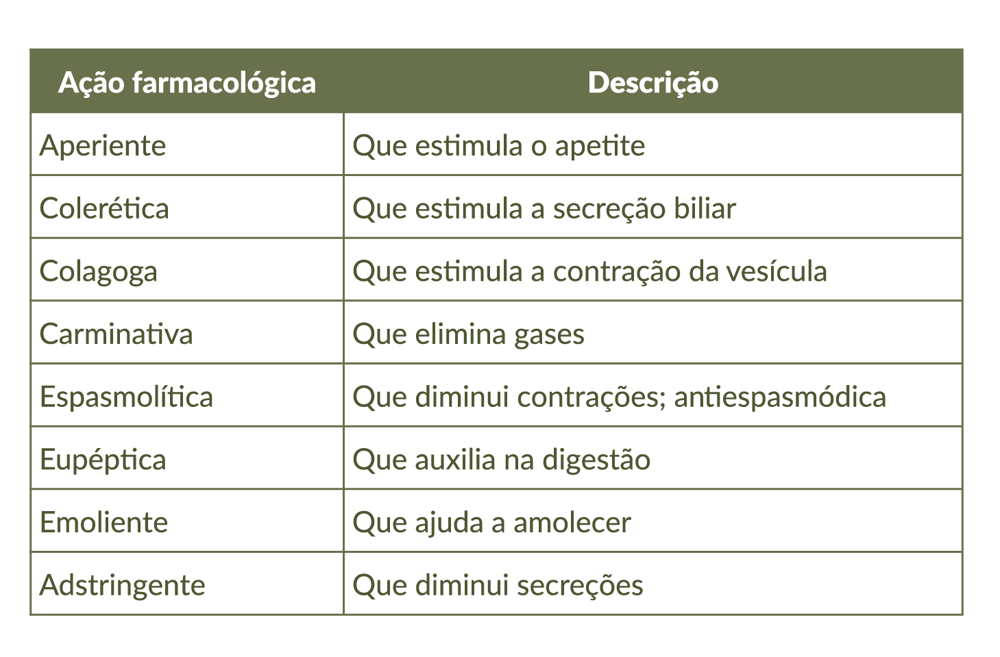

As principais ações farmacológicas no sistema digestório estão listadas a seguir no Quadro 2.
Quadro 2. Principais ações farmacológicas no sistema digestório.

Fonte: Termos médico-farmacêuticos (CEPLAMT, s.d.).